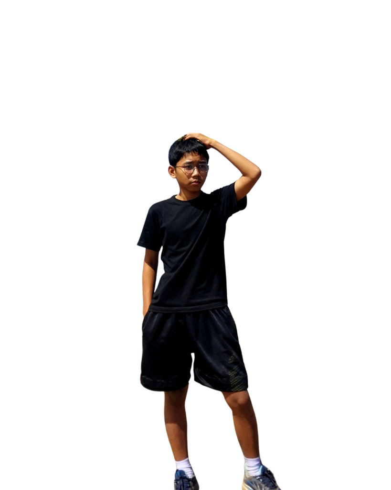

XI TEK 3 / Absen 35 / Semarang
ZHARIF ASYAM GHANI
Siswa yang mendalami pemrograman (coding) dan desain PCB.
Tautan Resmi
Temukan & Hubungi Saya
Perkenalan
ABOUT ME
Halo! Perkenalkan, nama saya Zharif Asyam Ghani, siswa kelas XI TEK 3, nomor absen 35. Saya lahir di Semarang.
Saya memiliki minat dan keahlian di bidang teknologi, khususnya pemrograman (coding) dan desain PCB. Selain itu, saya juga memiliki hobi bermain game dan mendengarkan musik.
Saya senang mempelajari hal-hal baru, mengembangkan kreativitas, serta meningkatkan kemampuan di bidang teknologi untuk meraih pengalaman dan pengetahuan yang lebih luas.
- Nama Lengkap
- Zharif Asyam Ghani
- Kelas & Absen
- XI TEK 3, Nomor 35
- Kota Kelahiran
- Semarang